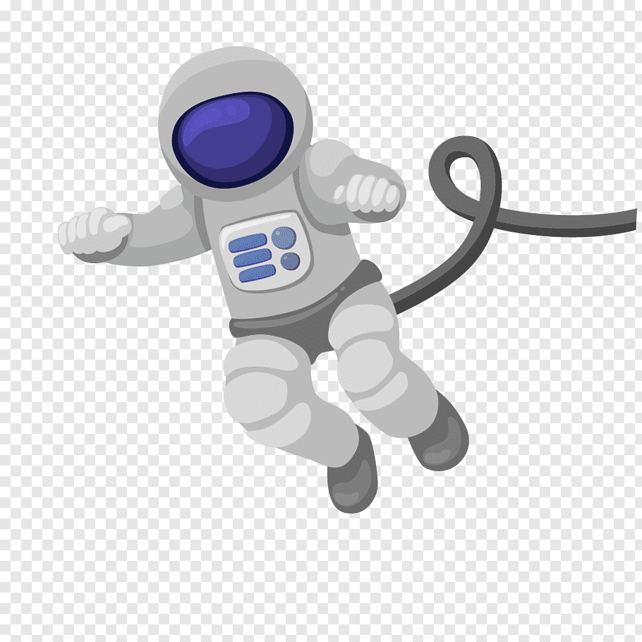

De Ruimte

Wat is de ruimte? Overdag zie je boven je hoofd de blauwe lucht en wolken, maar s'avonds is het donker en zie je soms heel veel sterren. Al die sterren zweven rond in de ruimte, een vacuum met rondzwevende stenen, planeten en veel meer...

De eerste in de ruimte
Nog nooit was er een mens in de ruimte geweest, totdat de Russen Yuri Gagarin op 12 April 1961 de ruimte in stuurden. Zijn reis duurde niet lang (108 min), maar hij is wel een legendarisch figuur geworden. Voordat Yuri in de raket stapte moest hij plassen, maar er was geen wc in bereik. Dus deed hij het tegen het achterwiel van zijn vervoerbus. Daarna deden latere kosmonouten dat ook. Tot op de dag van vandaag wordt de traditie in stand gehouden.
Verdere missies
Nadat Rusland Gagarin de ruimte in had gestuurd, wilden de Verenigde Staten laten zien dat zij dat ook konden. Zij stuurden Alan Shepard op een missie. Aan boord van de Mercury MR-3 werd hij op 5 mei 1961 gelanceerd. Hoewel de Russen als eerste in de ruimte waren geweest, zijn het de Amerikanen geweest die zich als eerst op de maan hebben bevonden. Niet alleen mensen zijn de ruimte in gestuurd, ook de Humble Space Telescope en Voyagers 1 en 2 zijn de ruimte in geschoten. Wetenschappers gebruiken de Humble space Telescope om hele scherpe afbeeldingen te maken van verre astronomische objecten. De Voyager missies waren onderdeel van het Voyagerprogramma van de Amerikanen. De ruimtevaartschepen waren onbemand, omdat de reis te lang zou duren voor de mens om nog levend terug te komen op aarde. Wat merkwaardig is, was dat eerst het schip, Voyager 2, de ruimte in is gegeaan en daarna pas Voyager 1.